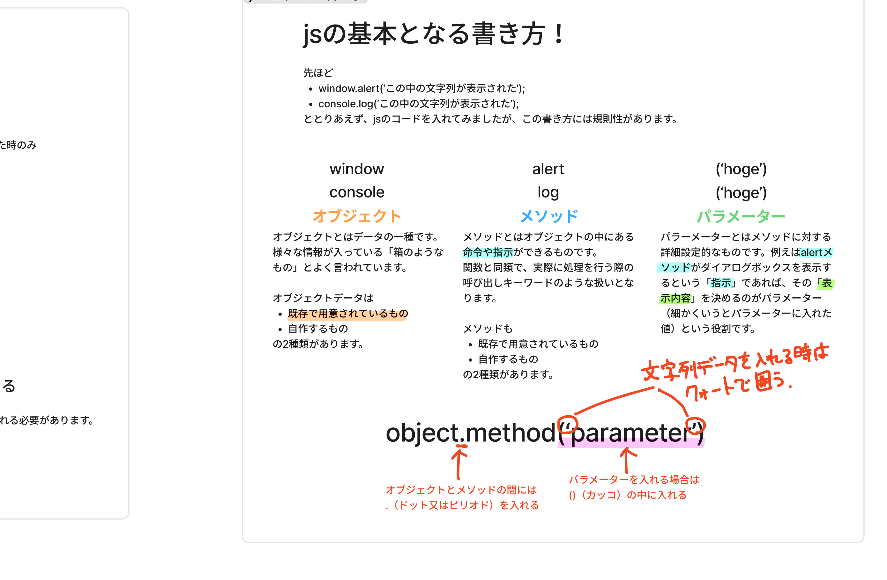

訓練校｜全6時間の集中授業

object.method(parameter) と、オブジェクト／メソッド／パラメーターの3要素
時刻をクリックすると詳しい解説に飛べます。★★★＝特に重要。全6時間（約5時間）。
HTML=マークアップ言語、CSS=スタイルシート言語。JSだけがコンピュータに「指示・命令」する言語。
HTML=情報／CSS=見た目／JS=動き。ユーザーのアクション（クリック等）で何かを起こす。
名前は似てるが全く別の言語。「メロンとメロンパンくらい違う」。
外部 .js を <script src deferⓍⓎ> で読む。deferは必ずつける。
JSが先に走るとHTML要素がまだ無くエラー。deferでHTML完了後に実行。
console.log()でブラウザのコンソールに表示。エラー箇所の絞り込みにも使う。
オブジェクト.メソッド(パラメーター)。例：console.log('hoge')。
window（画面全部）／console／document（HTML）／location（URL）。
文字列（クォートで囲う）・数値（計算できる）・ブール値（true/false）・オブジェクト。
let 名前 = 値;。イコールは右の値を左へ代入。使い回し＆一括変更に便利。
JavaScript（略してJS）＝プログラミング言語。今まで学んだHTML・CSSとは種類が違う。
| 言語 | 種類 | 役割 |
|---|---|---|
| HTML | マークアップ言語 | 情報（文字・画像・音声・動画）を記述 |
| CSS | スタイルシート言語 | 見た目（色・大きさ・レイアウト）を指定 |
| JavaScript | プログラミング言語 | コンピュータ・ブラウザに指示／命令する |
プログラミング言語はJS以外にもたくさんある（Python・Ruby・C・C#・Java など）。その中でJSはブラウザとの相性が良いので、Webデザイナー／フロントエンドを目指すなら学ぶ価値がある。
HTMLとCSSだけでもWebサイトはOK作れる。ではなぜJSが必要か。それは「動きの部分」を作るため。
例：ハンバーガーメニューをクリックでナビが出る、スライダー、フォームの選択で表示項目が変わる——これらはJSで実装する。
もしJSが向こう1週間で分からないぐらいだったら、もうCSSに集中して勉強した方がよっぽどいいです。中途半端にJSを学ぶぐらいなら、しっかりCSSが書けた方が就職的にもスキルセット的にも全然いい。1週間後にこの言葉をもう一度思い出してください。── A先生
※余談：JSはブラウザをエンジンにして動く言語。ブラウザゲーム（インベーダー風など）も作れる。練習にはいい題材。
HTMLにJSを取り込む方法は主に2つ。
新しいタグ <script> の中にJSのコードを直接書ける。HTMLとJSは相性がいいので書ける。
<script> window.alert('こんにちは'); </script>
これを使う場面はコードがかなり短いとき（5〜10行以内）・実験で書くとき。コードが長くなるとHTMLが見づらくなるのでNG。
CSSと同じ感覚で、script.js という外部ファイルを作って読み込む。こちらが基本。
<!-- HTML側で読み込む --> <script src="script.js" defer></script>
script.js が定番（CSSのstyle.cssと同じ感覚）common.js top.js のように複数に分けて管理するJS特有の落とし穴。HTMLは上から順に読み込まれる。途中でJSを読み込むと、JSがそこで実行され、まだ読み込まれていない下のHTML要素は「無い」扱いになる。
</body> の直前でJSを読み込む（HTMLを先に全部読ませる）。今もこのサイトは多いdefer をつける。HTML読み込みと並行してJSをダウンロードし、HTML完了後にJSを実行してくれるお決まり JSファイルを読み込むときは必ず defer をつける。これが今いちばんよく使われる読み込み方。
コンソール＝ブラウザに標準装備されたJSの実験場所。デベロッパーツールの中の「Console」タブ。エラーチェックやJSの実行テストができる。
console.log('初めてのjavascript'); // → コンソールに「初めてのjavascript」と表示される
console.log(1) console.log(2) と「石（マーカー）」を置く。表示されない番号があれば、その手前でエラーが起きていると分かる。優秀な人ほどこれを使う。
※余談：JSが分かると「500万円当たりました」系のブラウザ詐欺（偽のダイアログ）に引っかからなくなる。あれもJSで作られている。
JSの基本構文は、この3つの組み合わせでできている（冒頭の板書参照）。
object.method(parameter); // 例： console.log('hoge'); window.alert('hoge');
alertが「ダイアログを表示する」指示なら、表示内容を決めるのがパラメーター。()の中に入れる。
| オブジェクト | 中身（その箱に入っている情報） |
|---|---|
window | 画面上の情報すべて（横幅・高さ・URLなど） |
console | コンソール画面を操作する |
document | HTMLの情報（=DOM）。JSからHTMLを操るときに使う |
location | アドレス（URL）情報 |
メソッドは、ハリーポッターの呪文と一緒です。「ルーモス」と唱えると光るように、「log」と唱えるとコンソールに表示する、という処理に名前をつけたものがメソッドです。── A先生
.（ドット／ピリオド）()（カッコ） の中に入れるJSが扱うデータには種類（性質）がある。大きく4つ。
| データ型 | 英語 | 中身 |
|---|---|---|
| 文字列 | string | テキスト。クォートで囲う（例 'こんにちは'） |
| 数値 | number | 数字。計算できる（例 10） |
| ブール値 | boolean | true / false の2択（処理を分けるとき） |
| オブジェクト | object | 様々なデータをまとめた箱 |
'10' と 10 は別物。クォートで囲うと文字、囲わないと数値。
10 + 10 → 20（数値の足し算）'10' + '10' → '1010'（文字の連結）+ 足し算／- 引き算／* 掛け算／/ 割り算
なぜシングルクォート推奨か ① CSSと重複しない ② ダブルクォートの中でHTMLを出力するとき、中にシングルを使い分けられる（ダブルの中にダブルだと途中で途切れてエラーになる）。対ブラウザではどちらでもOKだが、対人間の分かりやすさでシングルがおすすめ。
logをLogと書くとエラー。メソッド名は決まっている）;（文章の句点「。」と同じ。区切りを示す）変数＝値を入れて使い回す箱。CSS変数も習ったが、JSはもっと色々なものを入れられる。
let rain = '今から雨が降りそうです'; console.log(rain); // → 「今から雨が降りそうです」と表示
console.log で表示（※変数名をクォートで囲うと、ただの文字になってしまうので注意）| 用語 | 意味 |
|---|---|
| JavaScript（JS） | ブラウザに指示を出すプログラミング言語。Webの「動き」を担当 |
| scriptタグ | HTMLにJSを書く／読み込むためのタグ |
| src属性 | 読み込むJSファイルのパスを指定する属性 |
| defer | HTML読み込みと並行し、完了後にJSを実行する属性。お決まりでつける |
| コンソール（console） | ブラウザ標準のJS実験場所。デベロッパーツール内 |
| console.log() | コンソールに値を表示するメソッド。デバッグの基本 |
| オブジェクト | 情報が入った箱（window/console/document/location等） |
| メソッド | オブジェクトの中の命令・指示（呪文のイメージ） |
| パラメーター | メソッドの詳細設定。()の中に入れる値 |
| DOM | documentオブジェクトの中のHTML構造。JSからHTMLを操る対象 |
| データ型 | 文字列(string)／数値(number)／ブール値(boolean)／オブジェクト |
| クォート | 文字列を囲う記号。シングル ' ' 推奨 |
| 変数 / let | 値を入れて使い回す箱／変数を宣言するキーワード |
| 代入 | 右の値を左の変数に入れること（イコールは右→左） |
| セミコロン; | 文の終わりを示す記号（句点の役割） |
JavaScript ディレクトリを作り、index.html＋script.jsを用意<script src="script.js" defer> でJSを読み込む（deferを忘れない）console.log()でコンソールに文字を表示してみるobject.method(parameter)の形を意識して書く激ムズです。このカリキュラムの中でもトップ3ぐらいの難しさになると思います。まずは軽く触りを覚えておけばいいかな、ぐらいの気持ちで受けてください。そうでもしないとメンタルがやられちゃうんですよ、難しすぎて。── JS初日のマインドセット
中途半端にJSを学ぶぐらいだったら、しっかりCSSが書けた方が就職的にもいいし、自分のスキルセット的にも全然いい。1週間後にこの言葉をもう一度思い出してください。── 正直なアドバイス
メソッドは、ハリーポッターの呪文と一緒です。「ルーモス」と唱えると光る。処理に名前をつけているのがメソッドです。── オブジェクト・メソッドの説明
JavaScriptがしっかり理解できるようになると、ブラウザの詐欺とかに引っかからなくなりますからね。これは嘘だな、ってのが大体分かるようになってくるんで。── JSを学ぶ思わぬ効能